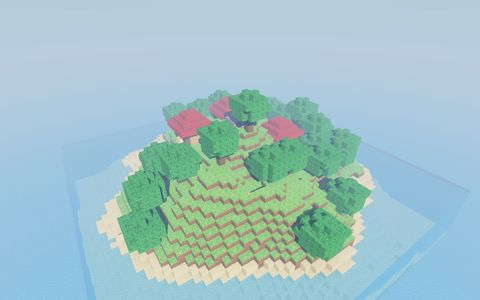
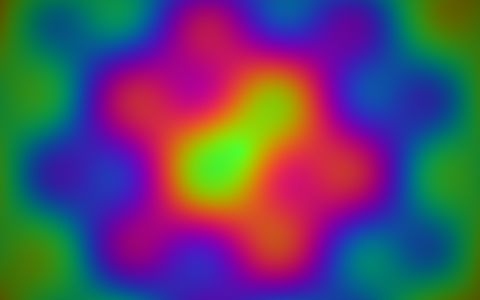
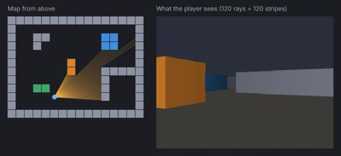
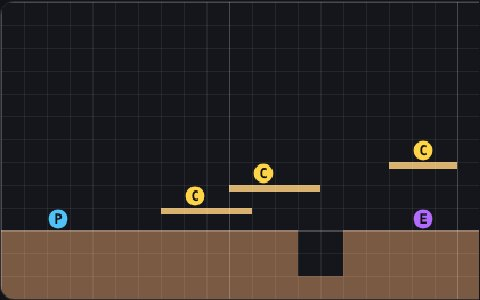
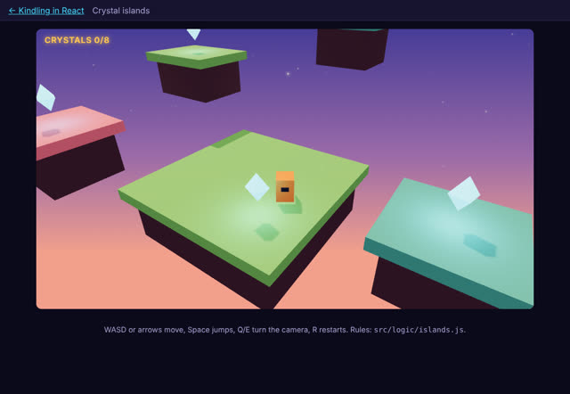
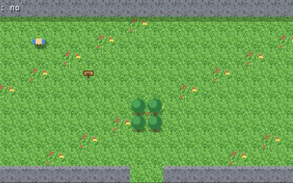

One world, five views
Collect coins on an island, and switch between 2D, 2.5D and 3D while you play.
2d2.5d3d
Kindling 2 · open source game engine
A small engine you can read in an afternoon, with its own WebGL 2 renderer: block worlds with soft shadows, ambient occlusion, fog, water and a day–night sky. Write your game once, then pick how it looks.
You opened this page straight from disk (file://). Browsers block JavaScript modules there, so nothing will run. Start a local server instead (see “Run it on your computer” below).
What's inside
Every file is plain JavaScript with a comment at the top that says what it does and why. No build step, no npm install: open a page and it runs.
Raw WebGL 2: chunked block meshes, shadow maps, ambient occlusion, tone mapping, sky, water and low-poly models. No Three.js.
Top-down map, isometric diorama, raycaster, 3D third person and first person. Switch with one line: view.setMode("iso").
Edit any example and see it change instantly, like CodePen. Your edits are kept in your browser.
Loop, input, gamepad, collision, physics, cameras, AI, pathfinding, sound, saving, UI, dialogue and inventories.
Interactive visualizations with sliders: the game loop, SAT collision, lighting, raycasting, voxel lighting and more.
A jam template, a level editor, a sprite packer and a 13 KB game to learn size-coding from.
How it feels
The world is just data: a grid of block numbers. The view decides how to draw it. Change "3d" to "iso" or "raycast" and the same world becomes a diorama or a retro shooter.
import { createVoxelWorld } from "kindling/world/voxel-world.js";
import { generateIsland } from "kindling/world/generate.js";
import { createWorldView } from "kindling/views/world-view.js";
const world = createVoxelWorld(64, 40, 64); // width, height, depth in blocks
const island = generateIsland(world, { seed: 3 }); // hills, beaches, trees, a village
const view = createWorldView({ container: "#stage", world, mode: "3d" });
view.render(island.spawn, 0); // draw one frame from the spawn point
view.setMode("iso"); // or "2d", "raycast", "3d-fps"Explore
Start anywhere. Every card is a page that runs in your browser, and every page links to its source.
Collect coins on an island, and switch between 2D, 2.5D and 3D while you play.









The same ideas in React and react-three-fiber. Python and Rust versions on GitHub.

Run it on your computer
You need Git and Python (or any static web server). This site is the same files, served by GitHub Pages.
Engine: checking…
mkdir -p ~/projects && cd ~/projects && git clone https://github.com/Normansrule/video-game-kindling.git kindling && cd kindling && python3 -m http.server 8000
# then open http://localhost:8000/Resources